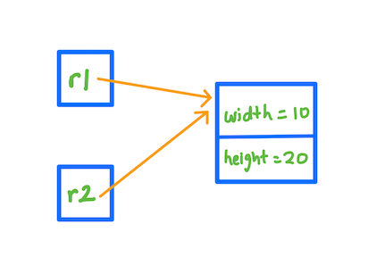
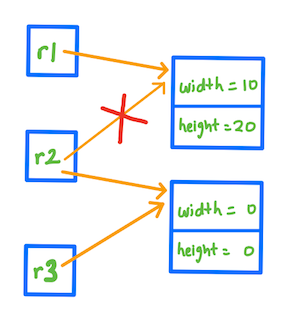
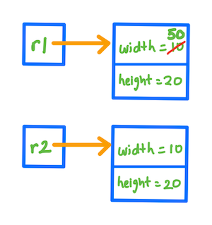

Copying objects
Assumed Knowledge:
Learning Outcomes:
- Define reference and instance copy.
- Identify a reference copy.
- Differentiate an instance copy from a reference copy.
- Be able to execute both types of object copying.
Author: Gaurav Gupta
Copying primitive variables
When we copy a variable of a primitive data type, into another variable, the contents of the variable on the right hand side of the assignment operator are copied over into the contents of the variable on the left hand side of the assignment operator.
int x = 1729;
int y;
y = x; //contents of x copied into y
Before:

After:

Class to be used
We will use the following class for the rest of this page,
public class Rectangle {
public int width, height;
public Rectangle(int w, int h) {
width = w;
height = h;
}
}
Reference copy
Recall the interaction when we copy a variable into another variable. The exact same thing happens when we copy an object into another object, the only difference being that objects hold an address to the location where the instance variables are kept. Hence, it’s this address that’s copied.
In a separate client code, we call this method on an instance of class Rectangle as,
public class Client {
public static void main(String[] args) {
Rectangle r1 = new Rectangle(10, 20);
Rectangle r2 = r1;
}
}
In the above example, the contents of r1, which is the address that r1 holds is copied into the contents of r2. Thus, r2 holds the same address that r1 holds.

We say,
r1andr2areRectanglereferences.- The collective memory holding instance variables is a
Rectangleinstance. - Since there are two references holding the address to that
instance, the reference count (RC) of that instance is 2. r1andr2are reference copies.
If you modify the contents of one of the reference copies, the contents of all other reference copies is also modified.
public class Client {
public static void main(String[] args) {
Rectangle r1 = new Rectangle(10, 20);
Rectangle r2 = r1;
r1.width = 50;
System.out.println(r2.width); //is also 50
r2.height = 0;
System.out.println(r1.height); //is also 0
}
}
However, if you modify the reference copy itself, the other reference copies don’t follow.
public class Client {
public static void main(String[] args) {
Rectangle r1 = new Rectangle(10, 20);
Rectangle r2 = r1;
Rectangle r3 = new Rectangle(0, 0);
r2 = r3; //now r2 is a reference copy of r3, NOT r1
System.out.println(r1.width); //still 10
System.out.println(r1.height); //still 20
}
}

Instance copy
Instead of creating reference copies, which creates dependencies, we can create a duplicate of an instance and refer to that instead. This is called an instance copy.
public class Client {
public static void main(String[] args) {
Rectangle r1 = new Rectangle(10, 20);
Rectangle r2 = new Rectangle(r1.width, r1.height);
r1.width = 50;
System.out.println(r2.width); //still 10
}
}

In the above example, we passed r1.width and r1.height (which are variables of primitive data type) as parameters to the constructor to create r2.
But one can see that the method above is inefficient, especially if there are numerous instance variables.
Copy constructor
We can add a special kind of constructor, known as the copy constructor which is used to create instance copies from a source (passed as parameter).
public class Rectangle {
public int width, height;
public Rectangle(int w, int h) {
width = w;
height = h;
}
public Rectangle(Rectangle source) {
width = source.width;
height = source.height;
}
}
With the copy constructor, we can make instance copies easily by simply passing the source object as a parameter to the constructor.
public class Client {
public static void main(String[] args) {
Rectangle r1 = new Rectangle(10, 20);
Rectangle r2 = new Rectangle(r1); //invoke copy constructor
r1.width = 50;
System.out.println(r2.width); //still 10
}
}